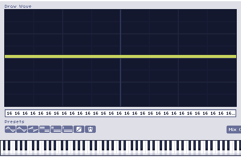
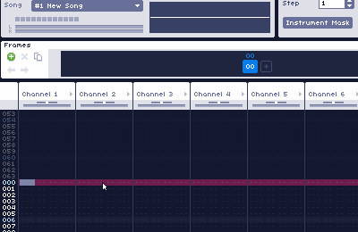
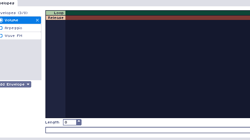
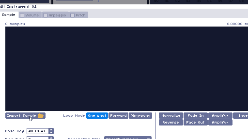
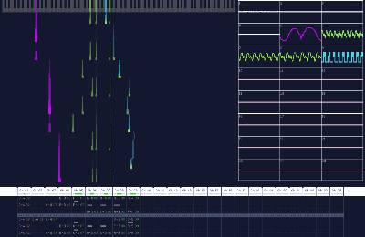
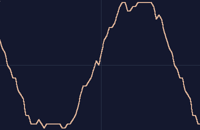

WaveTracker
WaveTracker is a free and open source music-making software for Windows. It uses wavetable synthesis and sampling to generate sounds, with endless combinations of effects to warp, modify or distort waves and sounds.
Features
Drawing Waves
Create up to 100 different custom waves with easy-to-use tools.
Quick & Easy Editing
Use either the keyboard or a MIDI controller to quickly write chiptune-esque music.
Create Custom Instruments
Define up to 100 custom instrument macros with volume, arpeggio, pitch and timbre controls.
Import and Edit Samples
Import any .wav or .mp3 file to use in your songs.
Built-in Visualizer
See your song with the click of a button via a built-in piano roll and oscilloscope visualizer.
Advanced Modulation Effects
Stretch, blend, and modulate waves with one another.
For an in-depth explanation, view the official documentation.
Frequently Asked Questions (FAQ)
Will there be Linux and MacOS releases?
Right now WaveTracker is Windows only, but myself and other contributors are working as fast as possible to get WaveTracker to be cross-platform!
What chips does this emulate?
Wavetracker does not emulate any hardware chips. It uses its own internal audio engine and samples to generate its sound.
Help! I can't place down any notes!
Make sure you are in editing mode by either pressing space or clicking the red record button in the toolbar.
I made some waves, but how do I use them in the song?
The Vxx effect will tell a channel which wave from the bank to use. Alternatively, wave instruments have a 'Wave Envelope' if you want to automate a sequence of waves over time.
See the wave bank documentation for more details.
How do I assign a wave to a wave instrument?
If you want an instrument to always use a specific wave or sequence of waves, you can create a 'Wave' envelope to automate what waves the instrument will use while playing.
See the wave bank documentation for more details.
Is there a list of all the effects somewhere?
Yes! See the effects list for a list of all the effects and what they do.
About
WaveTracker started out as a university project and quickly grew into a full tracking software. It was developed by Elias Ananiadis (@squiggythings) with the Monogame and NAudio C# libraries.
~ I based it off of some of my favorite chiptune/music editing tools, most notably Famitracker
and pxTone Collage. In a way, it combines the tracker and instrument editing interface of
Famitracker, with the audio and sample playback capabilities of pxTone, plus some extra bells
and whistles.
Special Thanks:
- Thanks to jsr for making Famitracker, and Pixel for making pxtone, providing the inspiration for this project.
- Thanks to the MonoGame Foundation, and Mark Heath for his NAudio .NET library.
- Thanks to the pxtone community discord server for their gracious support and testing contributions.
- Thanks to damifortune for providing a fantastic demo tune